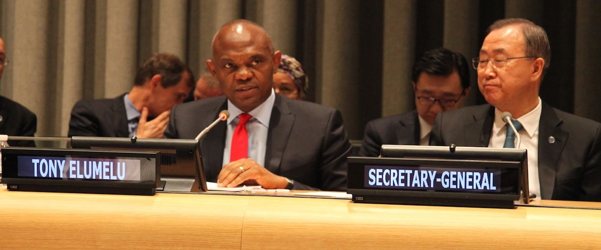

Tony Elumelu at the UN conference
Tony Elumelu's life, achievements and award
- 1963 Elumelu was born in Jos, Plateau State
- 1993 Tony Elumelu married Awele Vivien Elumelu, a medical doctor
- 2003 The Federal Government of Nigeria granted Tony Elumelu the title of Member of the Order of the Federal Republic (MFR), a national honour
- 2005 He led the acquisition of United Bank for Africa (UBA)
- 2006 Elumelu was voted African Business Leader of The Year by the Africa Investor magazine
- 2008 He was recognised African Banker of the Year by the African Banker magazine
- 2009 The Nigerian President Umaru Musa Yar'adua asked him to serve on the Presidential Committee on the Global Financial Crisis
- 2010 Elumelu founded Heirs Holdings
- 2011 Heirs Holdings acquired a controlling interest in the Transnational Corporation of Nigeria Plc
- 2012 He was awarded the prestigious National Honour of Commander of the Order of the Niger (CON) for his service in promoting private enterprise
- 2012 He was recognised as one of "Africa's 20 Most Powerfli People" by Forbes Magazine
- 2012 The New African Magazine featured him in their list of the "100 Most Influential Africans in Business
- 2013 Elumelu received the Leadership Award in Business and Philanthropy from the Africa-America Institute (AAI) Awards
- 2013 He was also named African Business Icon at the 2013 African Business Awards
- 2015 ESI-Africa named Elumelu in its 2015 'ESI Most Influential Figures in African Power list
- 2016 He was one of the co-chairs of the 26th World Economic Forum on Africa in Kigali, Rwanda
- 2016 He was awarded a Lifetime Achievement Award by CGECI Academy, (CGECI) in Abidjan